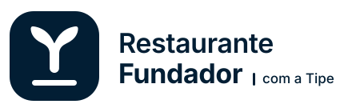

Interno · Tipe Guest · Fase 3
Selo Restaurante Fundador: três propostas
Para escolher uma. Todas usam só o símbolo oficial da Tipe (src/assets/marca/tipe-simbolo.svg), o turquesa #0FC9BD e o azul-marinho #021E34. Cada proposta tem um ícone (24 a 48 px) e uma assinatura completa (128 px para cima), em fundo claro, fundo escuro e uma cor só.
A · Broto
O símbolo da Tipe nasce de uma linha de base dentro do bloco quadrado da marca: quem começou junto. Bloco cheio, lê bem a 24 px. Assinatura horizontal com "Restaurante Fundador" e "com a Tipe".
Fundo claro
Fundo escuro
Uma cor



512 px
B · Encontro
Dois blocos sobrepostos: o do restaurante (contorno) e o da Tipe (cheio, com o símbolo). Duas partes juntas, lado a lado, sem moldura circular de carimbo. Na versão de uma cor, um respiro separa os dois blocos.
Fundo claro
Fundo escuro
Uma cor
512 px
C · Alicerce
O símbolo da Tipe sobre dois blocos de base, como uma pedra fundamental: os restaurantes que ajudam a construir a Tipe. Assinatura vertical, boa para adesivo de porta e cardápio.
Fundo claro
Fundo escuro

Uma cor

512 px
Comparação
| Critério | A · Broto | B · Encontro | C · Alicerce |
|---|---|---|---|
| Leitura a 24 px | Muito boa (bloco cheio) | Boa (contorno grosso) | Boa (base some um pouco) |
| Uma cor | Vazado no bloco | Respiro entre os dois blocos | Direto |
| Ideia principal | Começo, crescimento | Parceria entre duas partes | Construção desde a base |
| Risco de parecer certificação | Baixo (quadrado da marca) | Baixo (blocos quadrados, sem texto em volta) | Baixo (sem moldura) |
| Melhor uso | App, perfil, redes | Página do restaurante, materiais digitais | Adesivo de porta, cardápio, impressos |
- Os SVGs usam a fonte Sora com alternativas do sistema. Antes de produção, converter o texto da proposta escolhida em curvas.
- Arquivos:
public/interno/selo-fundador/, gerados pordocs/tipe-guest/selo/gerar-selo.pya partir do símbolo oficial. - Nenhuma proposta promete benefício, desconto ou destaque. Uso do selo pelo restaurante depende das regras do programa, ainda pendentes de aprovação comercial.